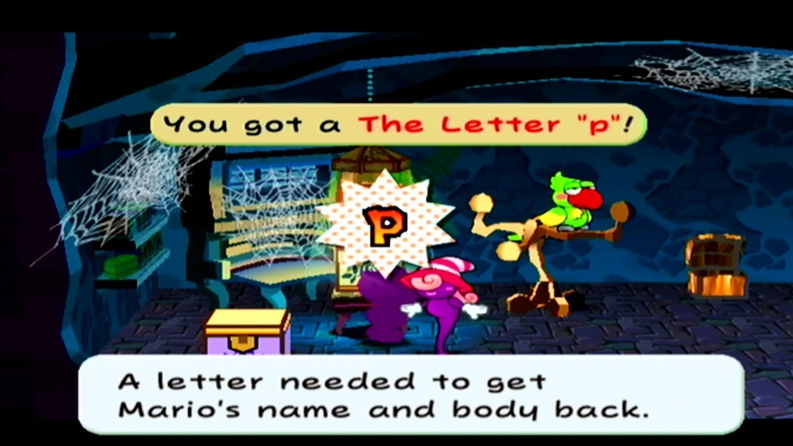
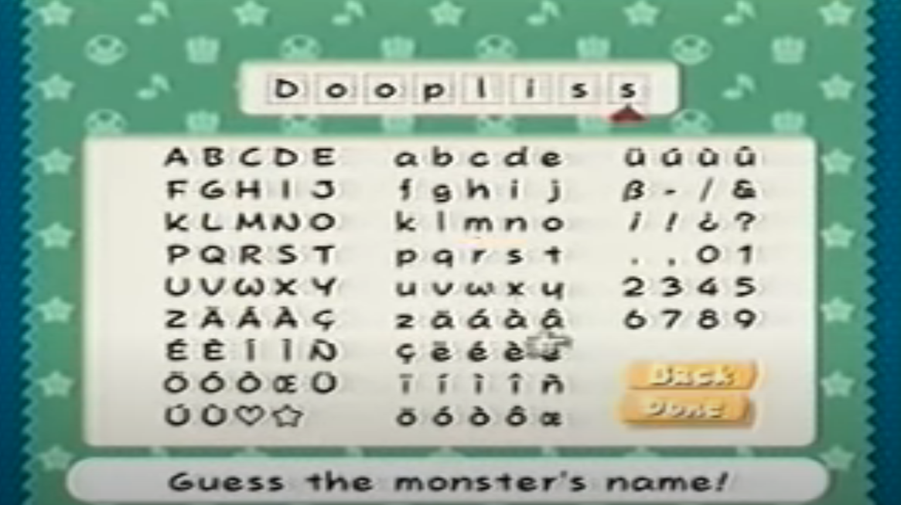
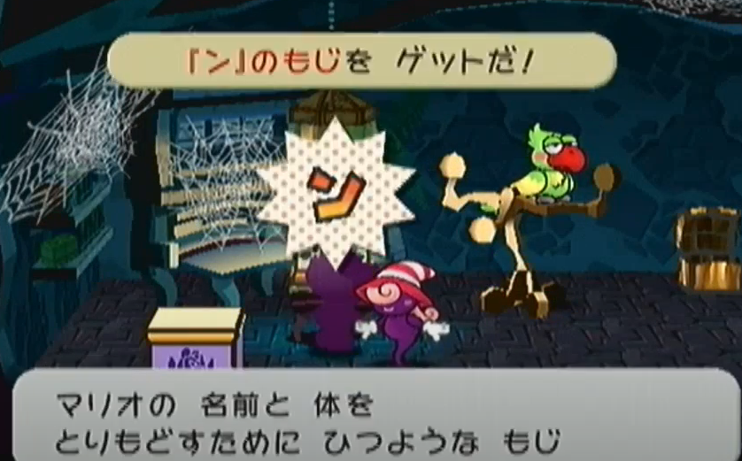
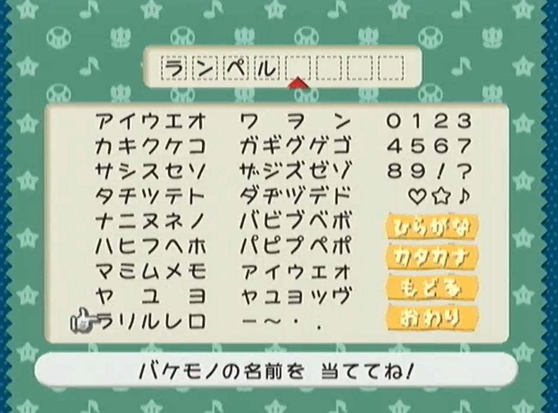

WHO IS DOOPLISS?
My brother said 'Doopliss Deez Nuts' in response to that question. But he is actually BASED. No he's an imposter enemy in the 2004 Gamecube game 'Paper Mario: The Thousand-Year Door' (also named ペーパーマリオRPG).
This is what he looks like:
He is very pale. He needs his pills.
Anyways, at some point in the game, you have to enter his name, but the letter 'p' is missing from the keyboard so you're unable to enter it!! Even if you did know it before the game hinted you.

Eventually you find the letter 'p' in a treasure chest in a ghost-filled mansion... along with knowledge of his name thanks to a talkative parrot.

Lowercase 'p' specifically

You can finally tell him his name, where he loses it and runs off. Also he stole your body and you were some purple blob this whole time.
But what does this look like in other languages?
In French, German, Italian and Spanish - his name is 'Rumpel', a reference to 'Rumpelstiltskin'.
In Japanese this is a bit more complicated. As there his name is 'ランペル' (Ranperu), and instead you have to find the letter 'ン' (the katakana 'n'). You get the item '『ン』のもじ' (The "N" character).

Got 'The "N" character"!
The letter needed to get Mario's name and body back!
With this, you can finally enter his name.

Hiragana
Katakana
Backspace
Accept
Guess the name of this monster!
What a doofy name.
Like Doofenshmirtz !!